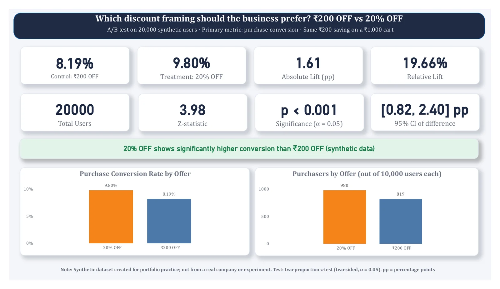
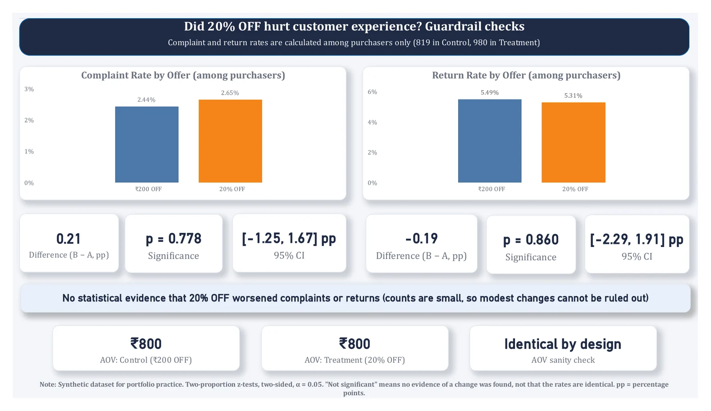
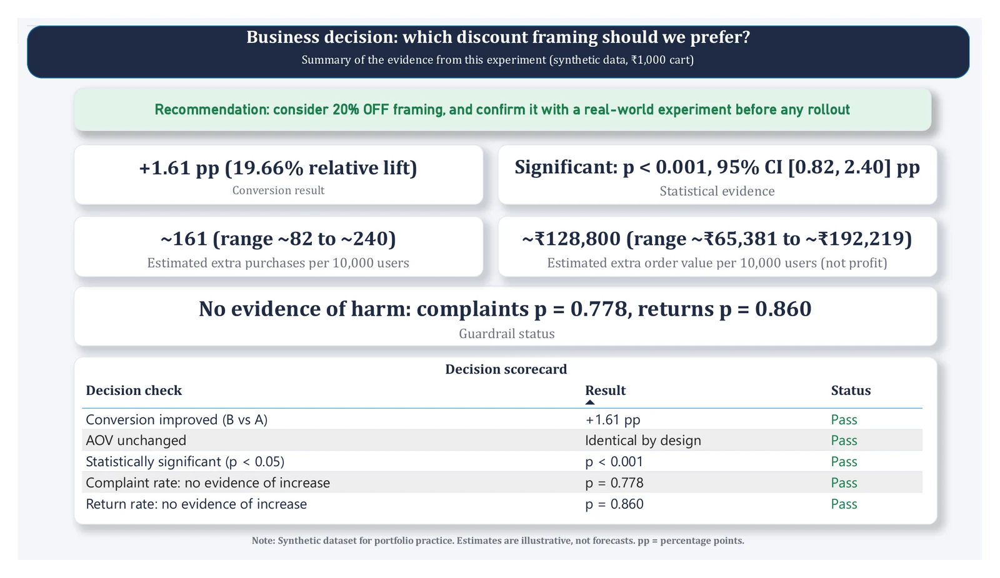
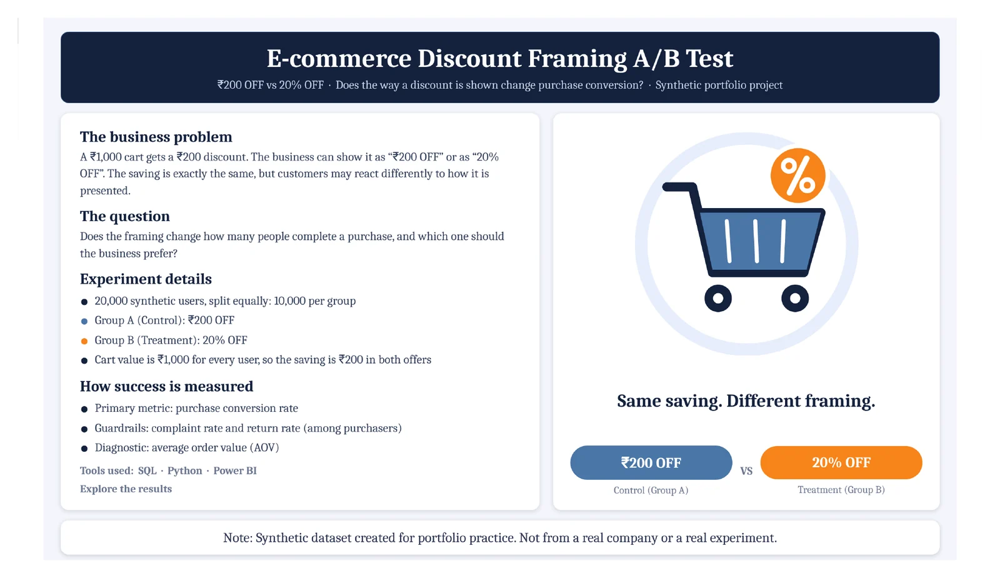

Executive summary
Does the same ₹200 saving convert better when it's shown as “₹200 OFF” or as “20% OFF”? I ran a full A/B-test workflow on a synthetic 20,000-user experiment (10,000 per group, ₹1,000 cart): data validation, SQL metrics, a two-proportion z-test in Python, guardrail checks and a Power BI decision dashboard.
20% OFF converted 9.80% against 8.19% — a lift of 1.61 percentage points (19.7% relative; 95% CI 0.82–2.40 pp; p < 0.001) with no detectable change in complaints or returns. Because the data is synthetic and the guardrail tests are underpowered, the recommendation is to confirm it with a live experiment, not to roll it out.
Business problem
| Group | Offer shown | Role | Users |
|---|---|---|---|
| A | ₹200 OFF | Control | 10,000 |
| B | 20% OFF | Treatment | 10,000 |
Question
- On a ₹1,000 cart both offers save exactly ₹200, so the only difference is the framing.
- Does the framing change purchase conversion — and does it do so without raising complaints or returns?
Hypotheses
- H0: conversion in A equals conversion in B
- H1: conversion differs (two-sided), α = 0.05
- Primary metric: purchase conversion. Guardrails: complaint rate and return rate among purchasers.
Dataset
| Column | Meaning |
|---|---|
| User_ID | Unique user (20,000 rows, no duplicates, no missing values) |
| Group / Offer | A = ₹200 OFF (control), B = 20% OFF (treatment) |
| Cart_Value | ₹1,000 for every user |
| Purchased / Order_Value | 1 if the user bought; ₹800 per order (₹1,000 minus the ₹200 saving), 0 otherwise |
| Complaint / Returned | Recorded for purchasers only |
Dataset note: this is a synthetic dataset created for portfolio practice. It does not represent any real company or real experiment, and the effect it shows is a property of the generated data.
Data validation
Before any metric was calculated, eight business rules were checked in SQL and in the notebook — each expected to return zero violating rows: no order value without a purchase, every purchase worth exactly ₹800, complaints and returns only among purchasers, and the right offer in each group.
Users are unique, nothing is missing, and the groups are balanced at 10,000 each, so there is no sample-ratio problem to correct for.
Experiment design
| Role | Metric | Definition |
|---|---|---|
| Primary | Purchase conversion | Purchasers ÷ all users in the group |
| Guardrail | Complaint rate | Complaints ÷ purchasers (819 in A, 980 in B) |
| Guardrail | Return rate | Returned orders ÷ purchasers |
| Sanity check | Average order value | ₹800 in both groups by design — a check, not a result |
Test: two-proportion z-test, two-sided, α = 0.05; the confidence interval uses the unpooled standard error.
Analytical approach
- Validate data
- SQL metrics (PostgreSQL)
- Python cross-check (SQLite + pandas)
- Z-test and 95% CI
- Guardrail tests
- Business impact
- Decision dashboard
Key findings
| Metric | A · ₹200 OFF | B · 20% OFF | Difference | 95% CI | p-value | Significant |
|---|---|---|---|---|---|---|
| Purchase conversion | 8.19% | 9.80% | +1.61 pp | [0.82, 2.40] | 0.000069 | Yes |
| Complaint rate | 2.44% | 2.65% | +0.21 pp | [−1.25, 1.67] | 0.778 | No |
| Return rate | 5.49% | 5.31% | −0.19 pp | [−2.29, 1.91] | 0.860 | No |
Business recommendations
Decision
- Prefer the 20% OFF framing for ₹1,000-cart offers — but confirm with a live experiment before any rollout.
- Report extra order value as an upper bound: profit depends on margin, and both groups give the same ₹200 discount.
Next experiments
- Repeat at other cart values (₹500, ₹2,000, ₹5,000), where a ₹200 saving and a 20% saving are no longer the same amount.
- Run the live test with enough users to make the complaint and return guardrails informative.
- Track contribution margin per user, not just conversion.
Query showcase
The primary metric in SQL, and the z-test in Python — the same number from two directions:
SELECT
group_name,
offer,
COUNT(*) AS users,
SUM(purchased) AS purchases,
ROUND(100.0 * SUM(purchased) / COUNT(*), 2) AS conversion_rate_pct
FROM ab_test
GROUP BY group_name, offer
ORDER BY group_name;from statsmodels.stats.proportion import proportions_ztest
count = [x_B, x_A] # purchasers in B, then A
nobs = [n_B, n_A] # users in B, then A
z_stat, p_value = proportions_ztest(count, nobs, alternative="two-sided")
print(f"Z-statistic: {z_stat:.4f}")
print(f"P-value: {p_value:.6f}")Dashboard showcase
A four-page Power BI report: a home page, the experiment overview, the guardrail checks and the business decision. Click any screenshot to enlarge.




Technical implementation
| Tool | Used for |
|---|---|
| PostgreSQL | Table setup and the full metric script (00_setup, 01_analysis) |
| SQLite + Python | The same metrics run from the notebook (sqlite3 + pandas) |
| statsmodels / NumPy | Two-proportion z-tests and confidence intervals |
| Power BI | Four-page decision dashboard |
Limitations & assumptions
Worth keeping in mind
- The data is synthetic. The lift is a property of the generated data, so this project demonstrates the method, not how real shoppers react to framing.
- Both offers are worth the same ₹200 only at a ₹1,000 cart. The result says nothing about other basket sizes.
- The guardrail tests are underpowered: not finding a difference does not rule out a meaningful increase in complaints or returns.
- Every order is ₹800 by design, so there is no revenue-per-user or margin analysis, and “extra order value” is not profit.
- There was no real randomisation, novelty-effect or seasonality analysis, as there would be in a live test.
Explore the code
The repository holds the PostgreSQL scripts, the full notebook, the dataset, the Power BI file with a PDF export, and every dashboard page as an image.